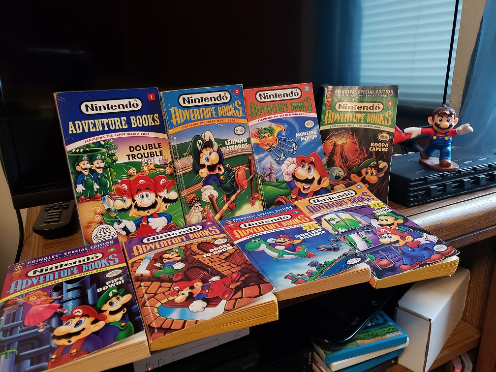

Nintendo Adventure Books Key

Hello and
welcome to my guides for the Nintendo Adventure Books. Here is some history: They consist of twelve books published from 1991 to 1992 by Archway Books in US and Mammoth Books in the UK with two writers under pseudonyms for the books. A little later promotional 'Pringles' editions were re-released. For some more personal background, I first discovered and
collected some of these back in 2007 when they were only pocket change. Now, while most aren't 'rare', they have dramatically increased depending on the book. (Zelda ones are made of gold apparently.) I owned three initially (Monster Mix-up, Leaping Lizards, and Brain Drain) but have since collected or gotten a chance to read a few more. There isn't much in depth coverage of these books online so I created this page. Follow the key below:
- Page and Chapter: The page number gets emphasis over chapter because in these
books you are sent to pages not chapters. Even if a chapter lasts a
few pages it will be refereed to as the first page it's on just
to avoid confusion. This applies to puzzles too. If page one's
puzzle actually is printed on page four it will be called page one's
puzzle.
- Description: Summary of the page's events.
- Puzzle: If the chapter features a puzzle to solve.
- Game over: If this chapter is a dead end. Also called 'endings'.
- Rewards: If the chapter grants the reader an item or points.
- Buffet: This penalizes the reader.
- Splits: Page(s) the chapter branches off to.
- Path: What pages lead to this chapter. A 'loop-back' page will logically have lots of paths.
- Puzzle solution: The solution to a puzzle if present and/or general tips on
how the reader should proceed and what to be aware of. This may
appear on a page/chapter that has no puzzle.
- Book goals: What the blurb on the score page recommends you do, visit, use, etc
- General stats: Amount of chapters, items and their locations, scoring, errors, etc.
Other things I will go over if I can is the optimal path: what I feel is the
best path of from start to end, or more rarely a high score path where the reader can follow the pages listed to max out the book's score. Some more note on that: What is the 'best' path depends on the book. Typically it will be
the path that will take the reader to the end as soon as possible
with the item(s) needed without getting stuck or looped around too much. Obviously we will avoid penalties and game overs as well. Sometimes however, a slightly longer path is better and more of what the book expects, giving you exposition rather than dropping you right at the bad guy's layer. High score paths in my guides will be rare, though I am for one key reason. These books often have a flaw where the high score is infinite or guaranteed or impossible due to design. This will be mentioned in guides if the case.
Pressing the F3 or equivalent (Ctrl+F) for your browser will be a must to navigate. For clarity's sake when I am refering of a page within a paragraph I will spell out numbers to not clutter up search results.
I will also attempt some color coding to make it easier to visually map paths. I hope you enjoy. I'm not an expert book mapper so this was at times an effort to map out by hand but worth it to give this series the attention it deserves and to do something no one else has bothered with to my knowledge. Contact me using one of the accounts listed on the 'About me' on the homepage if there are any errors I've made. Thank you, and read on!
Additional articles: The Perfect Nintendo Adventure Book
The guides: Plain text format
- Monster Mix-up
- Dinosaur Dilemma
- Leaping Lizards
- Brain Drain
- Double Trouble
- Pipe Down!
- Flown the Koopa
- Koopa Kapers
- Doors to Doom
- *New* Unjust Desserts
Types of puzzles in Nintendo Adventure Books:
- Decipher: Figure out a coded message, ranging from symbols, to counting backwards from alphabets, to marking out certain letters to read out the rest, and etc..
- Word search: A word searching type puzzle or close enough where you find words with a word bank hopefully provided (sometimes not) or a crossword puzzle.
- Maze: You either wind through a maze or follow path(s) to reach a stopping point. These might contain letters to somewhat crossover with deciphering puzzles as well. If your goal is the collect a certain amount of something, these may earn different scores depending on how well you do or what path you happen to guess. If so, this might lead to a 'You Can't Get This Score' (see below) page.
- ‘Get a straight edge, dummy’: Or at least a ruler. A visual puzzle where you must determine something from the illustration, such as if provided entities lines up, how entities compare, etc. The name sounds rude but it’s actually part of a quote from Double Trouble (well, minus the insult). Be warned that since we can't always be sure what the book's tolerances are regarding if something is aligned or touching, these can be unintentionally ambiguous as I will acknowledge should any of this puzzle come up.
- Math: The reader is required to do some sort of mathematical equation. This is rare, at least without overlapping with another type of puzzle.
- Logic and sequence: The reader is required to perform some kind of mental calculation with the image or scenario given. Examples: being provided an image to rotate in your head (or on a scratch sheet of paper), figuring out a riddle, or solving what's next in a sequence or pattern. Lastly, anything that is intellectual I feel but doesn't belong anywhere else will fall under this.
- Spot the difference/ matching: You are given 'matching' items to spot the differences between, or you are given an image and asked to pick something out of it by carefully observing it. Any more complications will make this puzzle count as 'logic'. Relates to 'Get a straight edge' but in that puzzle the entities are not necessarily supposed to resemble in anyway like they should here.
- You can’t get this score!: A page for if you get an erroneous result from another page, or try to cheat.
- Just a hint: A result type, meant to go with the other puzzles listed. These puzzles don't actually assist the reader. They may very well provide a hint, but the key point here is that it doesn't matter. Here's an example, in Book 2: Leaping Lizards a puzzle warns you late in the book that the other contestants will cheat. Sounds like vital info, except that will not change your own character's strategy or allow you to deal with it in anyway due to that knowledge. Therefore if that was never revealed, nothing would change. The book might even admit that it's just a tidbit or a puzzle 'just for fun' (as Pipe Down! puts it). Think of them as filler.
- Other: Anything else that comes up. Rare obviously. This may be something like trivia questions too.
Other terms used:
- Loop back path: Think of it as a soft reset. A page with several paths to it functioning as a way to give the reader a chance to take another route, a chance to get an item, a milder punishment for getting a puzzle wrong, or making bad choices depending on book.
- Reset: A hard reset, usually not labeled as such in story (except in Monster Mix-up) but effectively starting over the book by sending you to the start again or very close. Typically these remove your attained items so you can’t exploit it (except again in Monster Mix-up).
- Shaggy dog: A ‘shaggy dog’ story is a pointless story, so this path is a pointless path! It will not grant items or points or advance story, leaving you right where you were.
- 'Item of doom': A seemingly innocuous item that later dooms the reader if they obtain it. How rude! At best you may not be forced to use it or may be able to evade the path that kills you, but many books aren't that merciful.
US vs UK versions with images:
Double Trouble vs Leaping Lizards Front Covers
Book spines
Inside covers
First page
Double Trouble second page
Leaping Lizards second page
The back covers.Notice the full color images in the Mammoth published version and the advertising of unrelated books.